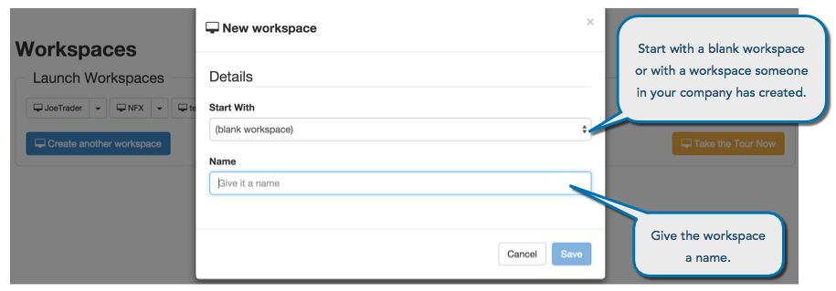
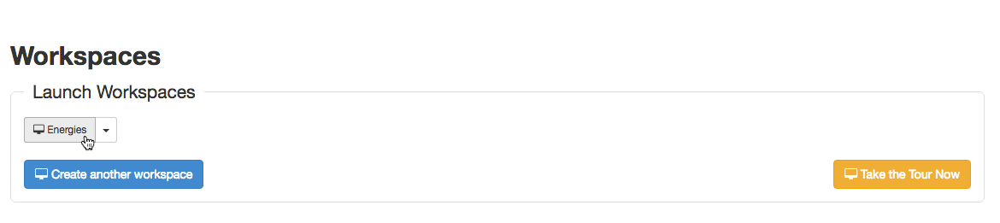
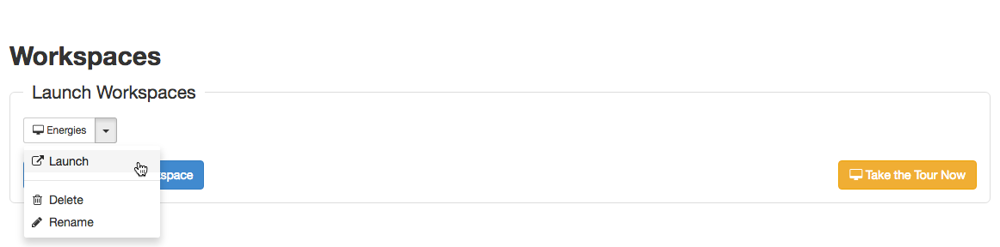

When you create a workspace, you can start with a blank one or modify an existing workspace or template and save it as a new one.
To create a workspace using a blank template:
On the Workspaces page, click Create another workspace and give it a name.
You can also select a Start With workspace you or others in your company have created as a starting point for a new one.

Click Save.
The new workspace is added to the Launch Workspaces section.
To create a workspace using an existing template:
Click File on the workspace tool bar and click Save As.
The new workspace is added to the Launch Workspaces section.
To open a workspace:
In the Launch Workspaces section of the Trade application landing page, click the button containing the workspace name.

Optionally, you can click the drop-down menu and select Launch to open the workspace.
